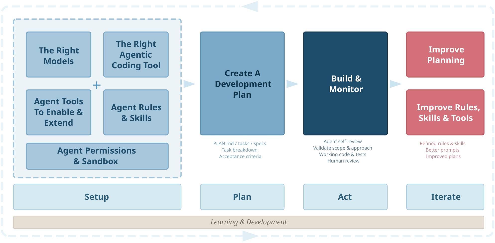

Sam McLeodAI Engineering Principal, Melbourne

Add tight, layered rules - Claude Code loads CLAUDE.md files into context on every single message. Every line you add is tokens the model has to process and remember. Treat it like a config file, not a wiki.
Use two layers:
~/.claude/CLAUDE.md) - things that apply to every project: language preferences, security rules, things to never do<repo>/CLAUDE.md or <repo>/.claude/CLAUDE.md) - repo-specific context: build commands, architecture decisions, testing patterns~/.claude/CLAUDE.md # always loaded, every project
<project>/CLAUDE.md # loaded for that project only
<project>/.claude/CLAUDE.md # alternative location (same effect)Think about the signal-to-noise ratio. If a rule isn't relevant to the current task, it's just noise misleading the prediction engine. Be clear, concise and specific. Don't blindly import someone else's entire rule set (including mine).
Project-level CLAUDE.md files should be checked into the repo so your whole team benefits.
Remember: Rules are suggestions, not hard controls.
Sandboxing constrains what Claude Code can read, write and connect to. It's the single fastest way to limit the blast radius of a runaway agent.
In ~/.claude/settings.json:
{
"sandbox": {
"enabled": true,
"autoAllowBashIfSandboxed": true,
"network": {
"allowedDomains": [
"*.github.com",
"*.githubusercontent.com",
"*.npmjs.com",
"*.pypi.org",
"*.crates.io",
"*.golang.org",
"*.docker.io",
"*.smcleod.net"
]
},
"excludedCommands": ["docker", "ssh", "uv run"]
}
}The network allowlist stops the agent from making unexpected outbound connections. autoAllowBashIfSandboxed means you don't get prompted for every shell command when the sandbox is already constraining what it can do. excludedCommands lets you exempt specific commands that need network access the sandbox would otherwise block.
Note: The sandbox is not a silver bullet. Claude can actually choose not to use the Sandbox if it encounters problems with it - and somewhat idiotically there's no way to disable this - _yet_.
Permissions let you pre-approve safe operations (so you're not interrupted constantly) and hard-block dangerous ones (so a confused agent can't do real damage). The syntax is Tool(pattern *).
{
"permissions": {
"allow": [
"Bash(git diff *)",
"Bash(git status *)",
"Bash(go *)",
"Bash(cargo *)",
"Edit(./**/*.go)",
"Edit(./**/*.ts*)",
"Edit(./**/*.py)",
"WebFetch",
"WebSearch"
],
"deny": [
"Bash(sudo *)",
"Bash(git push *)",
"Bash(rm -rf ~*)",
"Read(~/.ssh/**)",
"Read(**/secrets/**)"
],
"ask": [
"Bash(git add *)",
"Bash(git commit *)",
"Bash(rm -rf *)",
"Bash(ssh *)",
"Read(**/.env)"
]
}
}The deny list is your hard safety net. git push and sudo are the obvious ones. The ask list catches things that are usually fine but you want to eyeball first, like commits and destructive deletes. Everything in allow runs without prompting.
Skills are an effective way of extending your agent's knowledge. Think of them like a library where the agent can see all the book spines and pull out the relevant one whenever it encounters a situation where that knowledge would be useful. They're simple markdown files that Claude loads into context on demand, rather than permanently like rules.
Skills live in ~/.claude/skills/ (global) and .claude/skills/ (project-level). Each skill has a SKILL.md with a name and concise description in its front matter. The agent sees all skill names and descriptions automatically and self-selects the relevant ones.
~/.claude/skills/
├── code-review/
├── go-testing/
├── shell-scripting/
├── systematic-debugging/
├── extract-wisdom/
└── ...As well as the official skills documentation, you can see my skill creator skill (meta, I know).
Note: Never blindly install skills you find online, always review the content and any attached scripts to make sure they're not malicious and are aligned with your goals.
Claude Code has a built-in LSP tool that gives the agent access to go-to-definition, find-references, hover types, and diagnostics - the same code intelligence IDEs use. With LSP enabled, the agent can navigate code structurally rather than relying on text search - jumping to definitions, finding all call sites before refactoring, and catching type errors as it works.
It's enabled by installing code intelligence plugins from the official marketplace:
# Browse available code intelligence plugins (try searching for 'lsp')
/plugin
# Or install directly, e.g.
/plugin install typescript-lsp@claude-plugins-officialSome LSPs may also need the language servers installed for the languages you work with:
# Python
pip install python-lsp-server # or: uvx install python-lsp-server
# Go (included with the Go toolchain)
go install golang.org/x/tools/gopls@latest
# Rust
rustup component add rust-analyzer
# TypeScript / JavaScript
pnpm install -g typescript typescript-language-serverEvery MCP server you enable adds tool descriptions to the context. If you have 10 servers each exposing 5-20 tools, that's a lot of tokens spent in every interaction just telling the model what's available.
gh for Github) - let the agent use those instead of adding permanent MCP servers for them..claude/settings.json to scope servers to where they're actually needed.Planning mode (shift+tab to toggle) keeps the agent in read-only exploration mode. It can use sub-agents, read files, search code, use tools to research - but it can't make changes until you approve its plan.
This is valuable for anything beyond a simple, targeted fix. The plan itself is an artefact you can inspect and refine with Claude, when you're ready Claude will offer to start a fresh session to act upon the plan.
TLDR: plan first, act second, iterate.
LLMs are stateless. Every message you send includes the full conversation history. As a session gets longer, the model has more to process; it slows down and output quality degrades.
Embrace starting fresh sessions, operating from a plan allows you to do this without losing where you're up to.
Create commands or skills for frequently used prompts, providing you quick access via /command-name.
Here's my most-used one, /self-review that I run after Claude completes multiple tasks:
---
description: Conduct a critical self-review of your changes & fix any errors
---
Please conduct a critical self-review of your changes, check for
any errors or changes you missed, correct any errors you may find.Most of the rules, skills, hooks and commands I use are in my agentic-coding repo. Take what's useful, ignore the rest.
I write and review a lot of Agent Skills, and find myself frequently pushing back in reviews, as many authors assume they're writing "just another markdown prompt" without considering that they're actually working with one component of an agentic system.
The TLDR of my feedback is usually along the lines of:
- The descriptions only job is to tell the agent when the skill should be triggered.
- Keep the description as terse as possible while still triggering.
- The SKILL.md should be lean with detail pushed to reference files.
- Put repeatable work in scripts rather than relying on model inference.
I recommend teams use or create their own version of my skill-creator-primer skill.
The primer works alongside the official Anthropic skill-creator skill and aims to catch common pitfalls and align with best practices.
The descriptions only job is telling the agent when to load the skill. Summarising the contents invites the agent to act on the summary and skip the skill.
The main SKILL.md should inline only what every use of the skill needs, regardless of the situation. Practising progressive disclosure keeps skills lean, reusable and composable.
Other bundled information such as handling for specific scenarios goes in references/<file>.md behind a pointer that says when to read it, e.g:
If a step is often repeated, deterministic or requires a high degree of accuracy, bundle a small script.
uv run scripts/my-script.py <args>.Skills are for agents, not humans. Terse wins. The deletion test: cut a line and ask whether the agent's behaviour would change. If not, it stays cut.
The same can be true for having too many skills (without good reason to do so) - especially if the descriptions aren't tight, focused or well differentiated. Favour one skill with progressive disclosure (references for each scenario) over lots of smaller but related skills.
For workflows that must be followed within a skill:
Agents drift and finish early on long procedures; a visible checklist stops that. The same is true if your skill instructs the agent to task sub-agents with their own workflows.
SKILL.md).AGENTS.md / CLAUDE.md in its root to help you and others maintain it.make lint, make test, make build, make run, etc.) makes it easy for agents and skills to do the right thing everywhere.permissionsMode: plan in its frontmatter.Quick tells that a skill wasn't reviewed carefully:
Treat third party skills as you would any other software or library obtained from the internet - don't blindly install them without first reviewing their content.
SKILL.md, references) and scripts, review the markdown for malicious or risky instructions that could mislead the agent.
Hi, I'm Sam
AI engineer, open source contributor and music geek based in Melbourne, Australia. Around twenty years in tech across platform engineering and technical leadership, with the last five focused heavily on LLMs and AI. I'm an AI Engineering Principal, currently working with Mantel.
This site is where I write about engineering, share things I've learned, and occasionally ramble about music or hi-fi.
Outside of work:
The Links page has some of my favourite services, tools, and media.
Please log an issue!
Words are my own or somebody else's